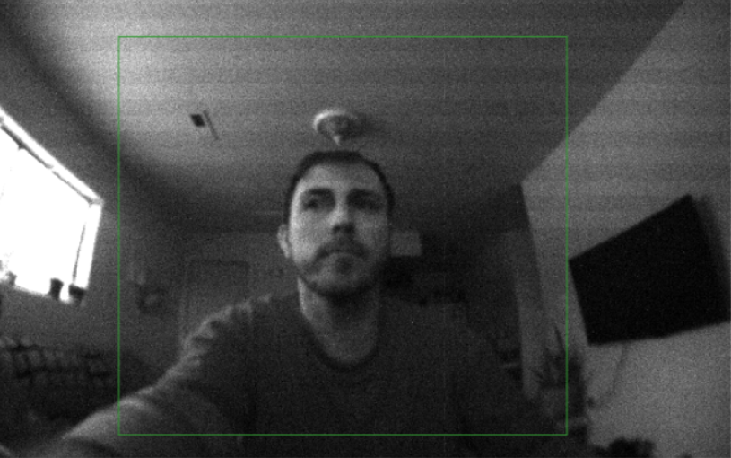
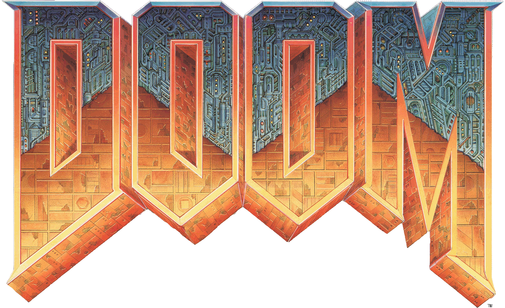

Hi, my name is McAuley. I'm a PhD student and graduate researcher under Dr. Marco Gerosa and Dr. Igor Steinmacher in the RESHAPE Lab @ Northern Arizona University. I study and publish in the field of Human-Computer Interaction, right now specifically at the intersection of AI and computer science pedagogy.
I love programming. I'm interested in embedded and operating systems, telecommunications and navigation, text editors and IDEs, graphics, networks, and machine learning (the last of which I contribute to publications on). I aspire to contribute to software that helps other scientists, such as medical researchers and climate scientists.
🌩️ I strongly prefer gloomy weather 
🏋️ I aspire to be a competitive powerlifter
☕ I collect coffee mugs
💻 I get excited about hardware
✒️ I'm a font nerd
👹 My favorite video game is
2023-05 - Present
1 year, 2 months
As a PhD student, I study how Large Language Models impact computer science pedagogy. I published my first first-author paper, a book chapter discussing the requirements that university instructors have for future Large Language Model-based conversational agents that would seek to be used in the classroom, during my first semester. This work won "Best Paper" award at the accepting workshop. Since then, I've been interviewing novice computer science students on their usage of LLM-based chatbots and working with my lab to build one of our own. During this, I'm mentoring one graduate student and managing two undergaduate students. I'm also continuing with research I was involved with as an undergraduate, working with Dr. Fabio Santos of Grand Canyon University on using machine learning models to predict skills to solve open issues. Through this process, I'm becoming a more independent learner and professional, developing research and technical presentation skills, and honing development skills I built as an undergraduate.
2022-08 - 2023-05
9 months
During my senior year as a B.S. Applied Computer Science student, I had the opportunity to work with a team of four other peers on a senior capstone project for Dr. Joe Llama at Lowell Observatory. We were tasked with building a web application that allowed astronomers to manage spectrographs and cameras for observations and I volunteered to be our team lead and a fullstack developer. My responsibilities included managing communication with our client and our team's supervisor for the duration of the project and contributing to the frontend, backend, interfaces for the hardware our application would manage, and DevOps tasks like containerization. In the end, I contributed almost half of the project's total commits and led our team to completing most of our stretch goals, client acceptance of the product, and receiving the second highest marks from a client in a class with 12 total clients.
2021-04 - 2023-05
2 years, 1 month
During my two years as an undergraduate researcher under Dr. Marco Gerosa at Northern Arizona University, I developed software for a project led by his PhD student, Fabio Santos (now a professor at Grand Canyon University). The tool our team produced uses machine learning to predict the skills needed to successfully resolve open issues on GitHub. From this project, including software I either wrote or contributed to, we produced three publications at significant conferences and journals (see my publications section). Today, I continue to contribute to Dr. Santos' work through development and publications on the tool.
2023-08 - Present
Current GPA: 3.6